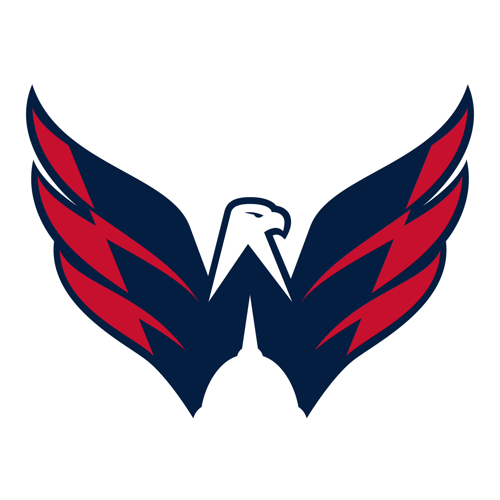

Washington Capitals 2024 Season So Far!
As of November 2024, the Washington Capitals’ season has been one of transition, with a mix of youthful promise and the continuing leadership of the team’s iconic veteran players, particularly Alex Ovechkin. The team is attempting to balance the end of its championship window with a process of rebuilding and retooling the roster to remain competitive in the NHL. Click on the sidebar features to hear more about the season, watch some awesome highlights, view the previous years roster and so much more!